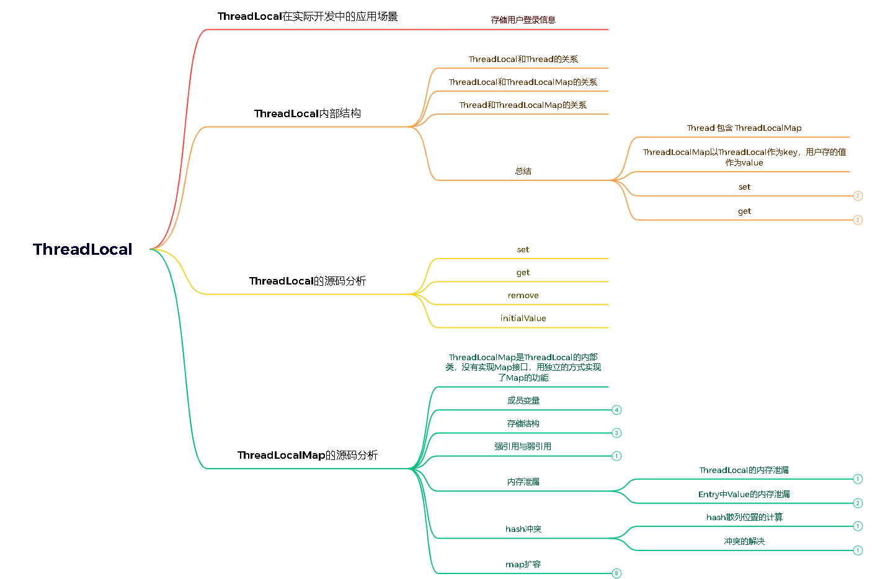

JUC并发之ThreadLocal

本文还有xmind，配合xmind食用，味道更佳：ThreadLocal.xmind
学习目标
- 了解ThreadLocal的介绍
- 了解ThreadLocal的内部结构
- 了解ThreadLocal的核心方法源码
- 了解ThreadLocalMap的源码
ThreadLocal介绍
官方介绍
/**
* This class provides thread-local variables. These variables differ from
* their normal counterparts in that each thread that accesses one (via its
* {@code get} or {@code set} method) has its own, independently initialized
* copy of the variable. {@code ThreadLocal} instances are typically private
* static fields in classes that wish to associate state with a thread (e.g.,
* a user ID or Transaction ID).
*
* <p>For example, the class below generates unique identifiers local to each
* thread.
* A thread's id is assigned the first time it invokes {@code ThreadId.get()}
* and remains unchanged on subsequent calls.
* <pre>
* import java.util.concurrent.atomic.AtomicInteger;
*
* public class ThreadId {
* // Atomic integer containing the next thread ID to be assigned
* private static final AtomicInteger nextId = new AtomicInteger(0);
*
* // Thread local variable containing each thread's ID
* private static final ThreadLocal<Integer> threadId =
* new ThreadLocal<Integer>() {
* @Override protected Integer initialValue() {
* return nextId.getAndIncrement();
* }
* };
*
* // Returns the current thread's unique ID, assigning it if necessary
* public static int get() {
* return threadId.get();
* }
* }
* </pre>
* <p>Each thread holds an implicit reference to its copy of a thread-local
* variable as long as the thread is alive and the {@code ThreadLocal}
* instance is accessible; after a thread goes away, all of its copies of
* thread-local instances are subject to garbage collection (unless other
* references to these copies exist).
*
* @author Josh Bloch and Doug Lea
* @since 1.2
*/
public class ThreadLocal<T> {
... 从Java官方文档中的描述：ThreadLocal类用来提供线程内部的局部变量。这种变量在多线程环境下访问（通过get和set方法访问）时能保证各个线程的变量相对独立于其他线程内的变量。ThreadLocal实例通常来说都是private static类型的，用于关联线程和线程上下文。
我们可以得知 ThreadLocal 的作用是：提供线程内的局部变量，不同的线程之间不会相互干扰，这种变量在线程的生命周期内起作用，减少同一个线程内多个函数或组件之间一些公共变量传递的复杂度。
总结:
- 线程并发: 在多线程并发的场景下
- 传递数据: 我们可以通过ThreadLocal在同一线程，不同组件中传递公共变量
- 线程隔离: 每个线程的变量都是独立的，不会互相影响
基本使用
常用方法
在使用之前,我们先来认识几个ThreadLocal的常用方法
| 方法声明 | 描述 |
|---|---|
| ThreadLocal() | 创建ThreadLocal对象 |
| public void set( T value) | 设置当前线程绑定的局部变量 |
| public T get() | 获取当前线程绑定的局部变量 |
| public void remove() | 移除当前线程绑定的局部变量 |
使用案例
我们来看下面这个案例 , 感受一下ThreadLocal 线程隔离的特点：
public class MyDemo {
private String content;
private String getContent() {
return content;
}
private void setContent(String content) {
this.content = content;
}
public static void main(String[] args) {
MyDemo demo = new MyDemo();
for (int i = 0; i < 5; i++) {
Thread thread = new Thread(new Runnable() {
@Override
public void run() {
demo.setContent(Thread.currentThread().getName() + "的数据");
System.out.println("-----------------------");
System.out.println(Thread.currentThread().getName() + "--->" + demo.getContent());
}
});
thread.setName("线程" + i);
thread.start();
}
}
}打印结果:

从结果可以看出多个线程在访问同一个变量的时候出现的异常，线程间的数据没有隔离。下面我们来看下采用 ThreadLocal 的方式来解决这个问题的例子。
public class MyDemo {
private static ThreadLocal<String> tl = new ThreadLocal<>();
private String content;
private String getContent() {
return tl.get();
}
private void setContent(String content) {
tl.set(content);
}
public static void main(String[] args) {
MyDemo demo = new MyDemo();
for (int i = 0; i < 5; i++) {
Thread thread = new Thread(new Runnable() {
@Override
public void run() {
demo.setContent(Thread.currentThread().getName() + "的数据");
System.out.println("-----------------------");
System.out.println(Thread.currentThread().getName() + "--->" + demo.getContent());
}
});
thread.setName("线程" + i);
thread.start();
}
}
}打印结果:

从结果来看，这样很好的解决了多线程之间数据隔离的问题，十分方便。
ThreadLocal的整体流程分析

关键的三点
- ThreadLocal
中有一个静态内部类：ThreadLocalMap - ThreadLocalMap 中有一个静态内部类 Entry；维护了数组：Entry[] table
- 这个也是ThreadLocal的底层实现，用数组实现了一个map，也有hash冲突的解决，和扩容
- 在set方法中有两个核心
- hash冲突是怎么解决的？
- 扩容的逻辑是怎么样的？
ThreadLocal的内部结构
通过以上的学习，我们对ThreadLocal的作用有了一定的认识。现在我们一起来看一下ThreadLocal的内部结构，探究它能够实现线程数据隔离的原理。
老版的设计
如果我们不去看源代码的话，可能会猜测ThreadLocal是这样子设计的：每个ThreadLocal都创建一个Map，然后用线程作为Map的key，要存储的局部变量作为Map的value，这样就能达到各个线程的局部变量隔离的效果。这是最简单的设计方法，JDK最早期的ThreadLocal 确实是这样设计的，但现在早已不是了。

现在的设计
但是，JDK后面优化了设计方案，在JDK8中 ThreadLocal的设计是：每个Thread维护一个ThreadLocalMap，这个Map的key是ThreadLocal实例本身，value才是真正要存储的值Object。
具体的过程是这样的：
（1） 每个Thread线程内部都有一个Map (ThreadLocalMap)
（2） Map里面存储ThreadLocal对象（key）和线程的变量副本（value）
（3）Thread内部的Map是由ThreadLocal维护的，由ThreadLocal负责向map获取和设置线程的变量值。
（4）对于不同的线程，每次获取副本值时，别的线程并不能获取到当前线程的副本值，形成了副本的隔离，互不干扰。

这样设计的好处
这个设计与我们一开始说的设计刚好相反，这样设计有如下两个优势：
（1） 这样设计之后每个Map存储的Entry数量就会变少。因为之前的存储数量由Thread的数量决定，现在是由ThreadLocal的数量决定。在实际运用当中，往往ThreadLocal的数量要少于Thread的数量。
（2） 当Thread销毁之后，对应的ThreadLocalMap也会随之销毁，能减少内存的使用。
ThreadLocal的核心方法源码
基于ThreadLocal的内部结构，我们继续分析它的核心方法源码，更深入的了解其操作原理。
除了构造方法之外， ThreadLocal对外暴露的方法有以下4个：
| 方法声明 | 描述 |
|---|---|
| protected T initialValue() | 返回当前线程局部变量的初始值 |
| public void set( T value) | 设置当前线程绑定的局部变量 |
| public T get() | 获取当前线程绑定的局部变量 |
| public void remove() | 移除当前线程绑定的局部变量 |
以下是这4个方法的详细源码分析(为了保证思路清晰, ThreadLocalMap部分暂时不展开,下一个知识点详解)
set方法
（1 ) 源码和对应的中文注释
/**
* 设置当前线程对应的ThreadLocal的值
*
* @param value 将要保存在当前线程对应的ThreadLocal的值
*/
public void set(T value) {
// 获取当前线程对象
Thread t = Thread.currentThread();
// 获取此线程对象中维护的ThreadLocalMap对象
ThreadLocalMap map = getMap(t);
// 判断map是否存在
if (map != null)
// 存在则调用map.set设置此实体entry
map.set(this, value);
else
// 1）当前线程Thread 不存在ThreadLocalMap对象
// 2）则调用createMap进行ThreadLocalMap对象的初始化
// 3）并将 t(当前线程)和value(t对应的值)作为第一个entry存放至ThreadLocalMap中
createMap(t, value);
}
/**
* 获取当前线程Thread对应维护的ThreadLocalMap
*
* @param t the current thread 当前线程
* @return the map 对应维护的ThreadLocalMap
*/
ThreadLocalMap getMap(Thread t) {
return t.threadLocals;
}
/**
*创建当前线程Thread对应维护的ThreadLocalMap
*
* @param t 当前线程
* @param firstValue 存放到map中第一个entry的值
*/
void createMap(Thread t, T firstValue) {
//这里的this是调用此方法的threadLocal
t.threadLocals = new ThreadLocalMap(this, firstValue);
}（2 ) 代码执行流程
A. 首先获取当前线程，并根据当前线程获取一个Map
B. 如果获取的Map不为空，则将参数设置到Map中（当前ThreadLocal的引用作为key）
C. 如果Map为空，则给该线程创建 Map，并设置初始值
get方法
（1 ) 源码和对应的中文注释
/**
* 返回当前线程中保存ThreadLocal的值
* 如果当前线程没有此ThreadLocal变量，
* 则它会通过调用{@link #initialValue} 方法进行初始化值
*
* @return 返回当前线程对应此ThreadLocal的值
*/
public T get() {
// 获取当前线程对象
Thread t = Thread.currentThread();
// 获取此线程对象中维护的ThreadLocalMap对象
ThreadLocalMap map = getMap(t);
// 如果此map存在
if (map != null) {
// 以当前的ThreadLocal 为 key，调用getEntry获取对应的存储实体e
ThreadLocalMap.Entry e = map.getEntry(this);
// 对e进行判空
if (e != null) {
@SuppressWarnings("unchecked")
// 获取存储实体 e 对应的 value值
// 即为我们想要的当前线程对应此ThreadLocal的值
T result = (T)e.value;
return result;
}
}
/*
初始化 : 有两种情况有执行当前代码
第一种情况: map不存在，表示此线程没有维护的ThreadLocalMap对象
第二种情况: map存在, 但是没有与当前ThreadLocal关联的entry
*/
return setInitialValue();
}
/**
* 初始化
*
* @return the initial value 初始化后的值
*/
private T setInitialValue() {
// 调用initialValue获取初始化的值
// 此方法可以被子类重写, 如果不重写默认返回null
T value = initialValue();
// 获取当前线程对象
Thread t = Thread.currentThread();
// 获取此线程对象中维护的ThreadLocalMap对象
ThreadLocalMap map = getMap(t);
// 判断map是否存在
if (map != null)
// 存在则调用map.set设置此实体entry
map.set(this, value);
else
// 1）当前线程Thread 不存在ThreadLocalMap对象
// 2）则调用createMap进行ThreadLocalMap对象的初始化
// 3）并将 t(当前线程)和value(t对应的值)作为第一个entry存放至ThreadLocalMap中
createMap(t, value);
// 返回设置的值value
return value;
}（2 ) 代码执行流程
A. 首先获取当前线程, 根据当前线程获取一个Map
B. 如果获取的Map不为空，则在Map中以ThreadLocal的引用作为key来在Map中获取对应的Entry e，否则转到D
C. 如果e不为null，则返回e.value，否则转到D
D. Map为空或者e为空，则通过initialValue函数获取初始值value，然后用ThreadLocal的引用和value作为firstKey和firstValue创建一个新的Map
总结: 先获取当前线程的 ThreadLocalMap 变量，如果存在则返回值，不存在则创建并返回初始值。
remove方法
（1 ) 源码和对应的中文注释
/**
* 删除当前线程中保存的ThreadLocal对应的实体entry
*/
public void remove() {
// 获取当前线程对象中维护的ThreadLocalMap对象
ThreadLocalMap m = getMap(Thread.currentThread());
// 如果此map存在
if (m != null)
// 存在则调用map.remove
// 以当前ThreadLocal为key删除对应的实体entry
m.remove(this);
}（2 ) 代码执行流程
A. 首先获取当前线程，并根据当前线程获取一个Map
B. 如果获取的Map不为空，则移除当前ThreadLocal对象对应的entry
initialValue方法
/**
* 返回当前线程对应的ThreadLocal的初始值
* 此方法的第一次调用发生在，当线程通过get方法访问此线程的ThreadLocal值时
* 除非线程先调用了set方法，在这种情况下，initialValue 才不会被这个线程调用。
* 通常情况下，每个线程最多调用一次这个方法。
*
* <p>这个方法仅仅简单的返回null {@code null};
* 如果程序员想ThreadLocal线程局部变量有一个除null以外的初始值，
* 必须通过子类继承{@code ThreadLocal} 的方式去重写此方法
* 通常, 可以通过匿名内部类的方式实现
*
* @return 当前ThreadLocal的初始值
*/
protected T initialValue() {
return null;
}
此方法的作用是 返回该线程局部变量的初始值。
（1） 这个方法是一个延迟调用方法，从上面的代码我们得知，在set方法还未调用而先调用了get方法时才执行，并且仅执行1次。
（2）这个方法缺省实现直接返回一个null。
（3）如果想要一个除null之外的初始值，可以重写此方法。（备注： 该方法是一个protected的方法，显然是为了让子类覆盖而设计的）
ThreadLocalMap源码分析
在分析ThreadLocal方法的时候，我们了解到ThreadLocal的操作实际上是围绕ThreadLocalMap展开的。ThreadLocalMap的源码相对比较复杂, 我们从以下三个方面进行讨论。
基本结构
ThreadLocalMap是ThreadLocal的内部类，没有实现Map接口，用独立的方式实现了Map的功能，其内部的Entry也是独立实现。

（1） 成员变量
/**
* 初始容量 —— 必须是2的整次幂
*/
private static final int INITIAL_CAPACITY = 16;
/**
* 存放数据的table，Entry类的定义在下面分析
* 同样，数组长度必须是2的整次幂。
*/
private Entry[] table;
/**
* 数组里面entrys的个数，可以用于判断table当前使用量是否超过阈值。
*/
private int size = 0;
/**
* 进行扩容的阈值，表使用量大于它的时候进行扩容。
*/
private int threshold; // Default to 0
跟HashMap类似，INITIAL_CAPACITY代表这个Map的初始容量；table 是一个Entry 类型的数组，用于存储数据；size 代表表中的存储数目； threshold 代表需要扩容时对应 size 的阈值。
（2） 存储结构 - Entry
/*
* Entry继承WeakReference，并且用ThreadLocal作为key.
* 如果key为null(entry.get() == null)，意味着key不再被引用，
* 因此这时候entry也可以从table中清除。
*/
static class Entry extends WeakReference<ThreadLocal<?>> {
/** The value associated with this ThreadLocal. */
Object value;
Entry(ThreadLocal<?> k, Object v) {
super(k);
value = v;
}
} 在ThreadLocalMap中，也是用Entry来保存K-V结构数据的。不过Entry中的key只能是ThreadLocal对象，这点在构造方法中已经限定死了。
另外，Entry继承WeakReference，也就是key（ThreadLocal）是弱引用，其目的是将ThreadLocal对象的生命周期和线程生命周期解绑。
弱引用和内存泄漏
有些程序员在使用ThreadLocal的过程中会发现有内存泄漏的情况发生，就猜测这个内存泄漏跟Entry中使用了弱引用的key有关系。这个理解其实是不对的。
我们先来回顾这个问题中涉及的几个名词概念，再来分析问题。
（1） 内存泄漏相关概念
- Memory overflow:内存溢出，没有足够的内存提供申请者使用。
- Memory leak: 内存泄漏是指程序中己动态分配的堆内存由于某种原因程序未释放或无法释放，造成系统内存的浪费，导致程序运行速度减慢甚至系统崩溃等严重后果。内存泄漏的堆积终将导致内存溢出。
（2） 弱引用相关概念
Java中的引用有4种类型： 强、软、弱、虚。当前这个问题主要涉及到强引用和弱引用：
强引用（“Strong” Reference），就是我们最常见的普通对象引用，只要还有强引用指向一个对象，就能表明对象还“活着”，垃圾回收器就不会回收这种对象。
弱引用（WeakReference），垃圾回收器一旦发现了只具有弱引用的对象，不管当前内存空间足够与否，都会回收它的内存。
（3） 如果key使用强引用
假设ThreadLocalMap中的key使用了强引用，那么会出现内存泄漏吗？
此时ThreadLocal的内存图（实线表示强引用）如下：

假设在业务代码中使用完ThreadLocal ，threadLocal Ref被回收了。
但是因为threadLocalMap的Entry强引用了threadLocal，造成threadLocal无法被回收。
在没有手动删除这个Entry以及CurrentThread依然运行的前提下，始终有强引用链 threadRef->currentThread->threadLocalMap->entry，Entry就不会被回收（Entry中包括了ThreadLocal实例和value），导致Entry内存泄漏。
也就是说，ThreadLocalMap中的key使用了强引用， 是无法完全避免内存泄漏的。
（5）如果key使用弱引用
那么ThreadLocalMap中的key使用了弱引用，会出现内存泄漏吗？
此时ThreadLocal的内存图（实线表示强引用，虚线表示弱引用）如下：

同样假设在业务代码中使用完ThreadLocal ，threadLocal Ref被回收了。
由于ThreadLocalMap只持有ThreadLocal的弱引用，没有任何强引用指向threadlocal实例, 所以threadlocal就可以顺利被gc回收，此时Entry中的key=null。
但是在没有手动删除这个Entry以及CurrentThread依然运行的前提下，也存在有强引用链 threadRef->currentThread->threadLocalMap->entry -> value ，value不会被回收， 而这块value永远不会被访问到了，导致value内存泄漏。
也就是说，ThreadLocalMap中的key使用了弱引用， 也有可能内存泄漏。
（6）出现内存泄漏的真实原因
比较以上两种情况，我们就会发现，内存泄漏的发生跟ThreadLocalMap中的key是否使用弱引用是没有关系的。那么内存泄漏的的真正原因是什么呢？
细心的同学会发现，在以上两种内存泄漏的情况中，都有两个前提：
1. 没有手动删除这个Entry
2. CurrentThread依然运行
第一点很好理解，只要在使用完ThreadLocal，调用其remove方法删除对应的Entry，就能避免内存泄漏。
第二点稍微复杂一点， 由于ThreadLocalMap是Thread的一个属性，被当前线程所引用，所以它的生命周期跟Thread一样长。那么在使用完ThreadLocal的使用，如果当前Thread也随之执行结束，ThreadLocalMap自然也会被gc回收，从根源上避免了内存泄漏。
综上，ThreadLocal内存泄漏的根源是：由于ThreadLocalMap的生命周期跟Thread一样长，如果没有手动删除对应key就会导致内存泄漏。
扩展：内存泄漏分为两部分：
- 指向 Entry 的指针（也就是 ThreadLocal 对象）的内存泄漏
- Entry 中Value 发生内存泄漏；
- 针对第一种内存泄漏，使用弱引用就可以解决了。
- 针对第二种内存泄漏，需要手动 remove 或者线程终结；
（7） 为什么使用弱引用
根据刚才的分析, 我们知道了： 无论ThreadLocalMap中的key使用哪种类型引用都无法完全避免内存泄漏，跟使用弱引用没有关系。
要避免内存泄漏有两种方式：
使用完ThreadLocal，调用其remove方法删除对应的Entry
使用完ThreadLocal，当前Thread也随之运行结束
相对第一种方式，第二种方式显然更不好控制，特别是使用线程池的时候，线程结束是不会销毁的。
也就是说，只要记得在使用完ThreadLocal及时的调用remove，无论key是强引用还是弱引用都不会有问题。那么为什么key要用弱引用呢？
事实上，在ThreadLocalMap中的set/getEntry方法中，会对key为null（也即是ThreadLocal为null）进行判断，如果为null的话，那么是会对value置为null的。
这就意味着使用完ThreadLocal，CurrentThread依然运行的前提下，就算忘记调用remove方法，弱引用比强引用可以多一层保障：弱引用的ThreadLocal会被回收，对应的value在下一次ThreadLocalMap调用set,get,remove中的任一方法的时候会被清除，从而避免内存泄漏。
hash冲突的解决
hash冲突的解决是Map中的一个重要内容。我们以hash冲突的解决为线索，来研究一下ThreadLocalMap的核心源码。
（1） 首先从ThreadLocal的set() 方法入手
public void set(T value) {
Thread t = Thread.currentThread();
ThreadLocal.ThreadLocalMap map = getMap(t);
if (map != null)
//调用了ThreadLocalMap的set方法
map.set(this, value);
else
createMap(t, value);
}
ThreadLocal.ThreadLocalMap getMap(Thread t) {
return t.threadLocals;
}
void createMap(Thread t, T firstValue) {
//调用了ThreadLocalMap的构造方法
t.threadLocals = new ThreadLocal.ThreadLocalMap(this, firstValue);
}这个方法我们刚才分析过, 其作用是设置当前线程绑定的局部变量 :
A. 首先获取当前线程，并根据当前线程获取一个Map
B. 如果获取的Map不为空，则将参数设置到Map中（当前ThreadLocal的引用作为key）
(这里调用了ThreadLocalMap的set方法)
C. 如果Map为空，则给该线程创建 Map，并设置初始值
(这里调用了ThreadLocalMap的构造方法)
这段代码有两个地方分别涉及到ThreadLocalMap的两个方法, 我们接着分析这两个方法。
**（2）构造方法ThreadLocalMap(ThreadLocal<?> firstKey, Object firstValue)**
/*
* firstKey : 本ThreadLocal实例(this)
* firstValue ： 要保存的线程本地变量
*/
ThreadLocalMap(ThreadLocal<?> firstKey, Object firstValue) {
//初始化table
table = new ThreadLocal.ThreadLocalMap.Entry[INITIAL_CAPACITY];
//计算索引(重点代码）
int i = firstKey.threadLocalHashCode & (INITIAL_CAPACITY - 1);
//设置值
table[i] = new ThreadLocal.ThreadLocalMap.Entry(firstKey, firstValue);
size = 1;
//设置阈值
setThreshold(INITIAL_CAPACITY);
} 构造函数首先创建一个长度为16的Entry数组，然后计算出firstKey对应的索引，然后存储到table中，并设置size和threshold。
重点分析： int i = firstKey.threadLocalHashCode & (INITIAL_CAPACITY - 1)。
a. 关于firstKey.threadLocalHashCode：
private final int threadLocalHashCode = nextHashCode();
private static int nextHashCode() {
return nextHashCode.getAndAdd(HASH_INCREMENT);
}
//AtomicInteger是一个提供原子操作的Integer类，通过线程安全的方式操作加减,适合高并发情况下的使用
private static AtomicInteger nextHashCode = new AtomicInteger();
//特殊的hash值
private static final int HASH_INCREMENT = 0x61c88647; 这里定义了一个AtomicInteger类型，每次获取当前值并加上HASH_INCREMENT，HASH_INCREMENT = 0x61c88647,这个值跟斐波那契数列（黄金分割数）有关，其主要目的就是为了让哈希码能均匀的分布在2的n次方的数组里, 也就是Entry[] table中，这样做可以尽量避免hash冲突。
b. 关于& (INITIAL_CAPACITY - 1)
计算hash的时候里面采用了hashCode & (size - 1)的算法，这相当于取模运算hashCode % size的一个更高效的实现。正是因为这种算法，我们要求size必须是2的整次幂，这也能保证在索引不越界的前提下，使得hash发生冲突的次数减小。
（3） ThreadLocalMap中的set方法
private void set(ThreadLocal<?> key, Object value) {
ThreadLocal.ThreadLocalMap.Entry[] tab = table;
int len = tab.length;
//计算索引(重点代码，刚才分析过了）
int i = key.threadLocalHashCode & (len-1);
/**
* 使用线性探测法查找元素（重点代码）
*/
for (ThreadLocal.ThreadLocalMap.Entry e = tab[i];
e != null;
e = tab[i = nextIndex(i, len)]) {
ThreadLocal<?> k = e.get();
//ThreadLocal 对应的 key 存在，直接覆盖之前的值
if (k == key) {
e.value = value;
return;
}
// key为 null，但是值不为 null，说明之前的 ThreadLocal 对象已经被回收了，
// 当前数组中的 Entry 是一个陈旧（stale）的元素
if (k == null) {
//用新元素替换陈旧的元素，这个方法进行了不少的垃圾清理动作，防止内存泄漏
replaceStaleEntry(key, value, i);
return;
}
}
//ThreadLocal对应的key不存在并且没有找到陈旧的元素，则在空元素的位置创建一个新的Entry。
tab[i] = new Entry(key, value);
int sz = ++size;
/**
* cleanSomeSlots用于清除那些e.get()==null的元素，
* 这种数据key关联的对象已经被回收，所以这个Entry(table[index])可以被置null。
* 如果没有清除任何entry,并且当前使用量达到了负载因子所定义(长度的2/3)，那么进行
* rehash（执行一次全表的扫描清理工作）
*/
if (!cleanSomeSlots(i, sz) && sz >= threshold)
rehash();
}
/**
* 获取环形数组的下一个索引
*/
private static int nextIndex(int i, int len) {
return ((i + 1 < len) ? i + 1 : 0);
}
代码执行流程：
A. 首先还是根据key计算出索引 i，然后查找i位置上的Entry，
B. 若是Entry已经存在并且key等于传入的key，那么这时候直接给这个Entry赋新的value值,
C. 若是Entry存在，但是key为null，则调用replaceStaleEntry来更换这个key为空的Entry,
D. 不断循环检测，直到遇到为null的地方，这时候要是还没在循环过程中return，那么就在这个null的位置新建一个Entry，并且插入，同时size增加1。
最后调用cleanSomeSlots，清理key为null的Entry，最后返回是否清理了Entry，接下来再判断sz 是否>= thresgold达到了rehash的条件，达到的话就会调用rehash函数执行一次全表的扫描清理。
重点分析 ： ThreadLocalMap使用线性探测法来解决哈希冲突的。
该方法一次探测下一个地址，直到有空的地址后插入，若整个空间都找不到空余的地址，则产生溢出。
举个例子，假设当前table长度为16，也就是说如果计算出来key的hash值为14，如果table[14]上已经有值，并且其key与当前key不一致，那么就发生了hash冲突，这个时候将14加1得到15，取table[15]进行判断，这个时候如果还是冲突会回到0，取table[0],以此类推，直到可以插入。
按照上面的描述，可以把Entry[] table看成一个环形数组。
线性探测法也叫开放定址法
- 开放定址法：当哈希表中某个位置已经被占用时，开放定址法会根据某种算法（例如二次探测、双重散列等）来计算新的位置，并继续查找，直到找到一个空闲位置为止。
- 线性探测法：是开放定址法的一种具体实现。
扩容机制
在 ThreadLocalMap set 方法最后两行
/**
* cleanSomeSlots用于清除那些e.get()==null的元素，
* 这种数据key关联的对象已经被回收，所以这个Entry(table[index])可以被置null。
* 如果没有清除任何entry,并且当前使用量达到了负载因子所定义(长度的2/3)，那么进行
* rehash（执行一次全表的扫描清理工作）
*/
if (!cleanSomeSlots(i, sz) && sz >= threshold)
rehash();会尝试清理 slot 槽位（启发式清理），如果清理完之后的 slot 槽位，还是大于 threshold 定义长度
就会进行 rehash()
private void rehash() {
//清理过期Entry
expungeStaleEntries();
//扩容
if (size >= threshold - threshold / 4)
resize();
}
//清理过期Entry
private void expungeStaleEntries() {
Entry[] tab = table;
int len = tab.length;
for (int j = 0; j < len; j++) {
Entry e = tab[j];
if (e != null && e.get() == null)
expungeStaleEntry(j);
}
}rehash() 包含两个操作
- 全表清理（和启发式清理不一样）
- 扩容 resize()
/**
* Double the capacity of the table.
*/
private void resize() {
Entry[] oldTab = table;
int oldLen = oldTab.length;
int newLen = oldLen * 2;
Entry[] newTab = new Entry[newLen];
int count = 0;
for (int j = 0; j < oldLen; ++j) {
Entry e = oldTab[j];
if (e != null) {
ThreadLocal<?> k = e.get();
if (k == null) {
e.value = null; // Help the GC
} else {
int h = k.threadLocalHashCode & (newLen - 1);
while (newTab[h] != null)
h = nextIndex(h, newLen);
newTab[h] = e;
count++;
}
}
}
setThreshold(newLen);
size = count;
table = newTab;
}扩容后的newTab的大小为老数组的两倍
然后遍历老的table数组，散列方法重新计算位置，开放地址解决冲突，然后放到新的newTab
遍历完成之后，oldTab中所有的entry数据都已经放入到newTab中了，然后table引用指向newTab